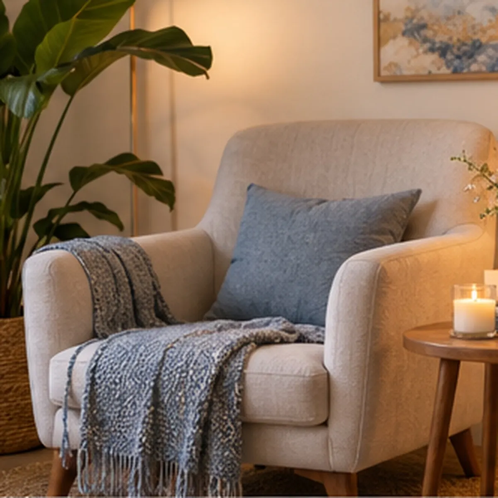
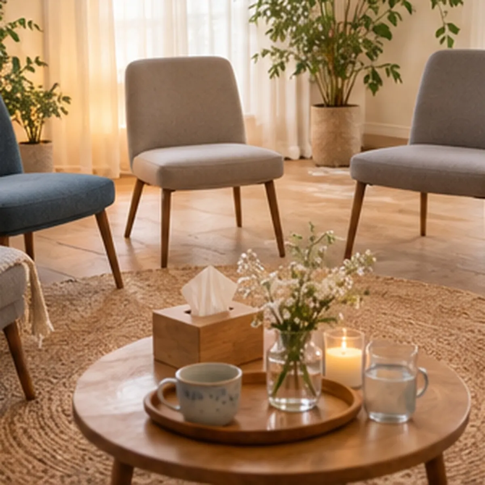

01 / A DISTANCIA
Atención virtual
Un espacio de encuentro desde donde estés, con la privacidad que necesites.
PSICOLOGÍA · ORIENTACIÓN PSICOANALÍTICA
Hay momentos en los que hablar puede abrir un camino. Te ofrezco una escucha profesional, cálida y respetuosa, a tu tiempo.
Un encuentro donde lo que te pasa puede tener un lugar, sin apuros ni juicios.
SOBRE MÍ · FORMACIÓN
Soy licenciada en Psicología con orientación psicoanalítica. Acompaño a adolescentes y adultos en un espacio de escucha que respeta la singularidad de cada historia.
Mi trabajo se construye en diálogo, con atención a lo que necesitás traer y al tiempo propio de cada proceso.
CÓMO PODEMOS TRABAJAR
La consulta puede partir de distintos momentos y preguntas. Estos son algunos de los temas que acompaño.
Un espacio de encuentro desde donde estés, con la privacidad que necesites.

Si preferís un encuentro en persona, consultá por disponibilidad y ubicación exacta.
DUELO GESTACIONAL Y PERINATAL
El duelo gestacional y perinatal puede vivirse de maneras muy distintas. Este espacio ofrece escucha y acompañamiento sin imponer una forma de sentir ni un tiempo para atravesarlo.
También podés consultar por el grupo de acompañamiento para madres en duelo: un espacio de encuentro para compartir con otras personas que transitan experiencias afines.
Consultar por el grupo ↗
Un encuentro para acompañarnos.EL ESPACIO
Conocé el ambiente de atención y las dos maneras de comenzar tu consulta.
UBICACIÓN Y HORARIOS
Consultá los días y horarios disponibles. Para la atención presencial, te comparto la dirección exacta y el mapa del consultorio al coordinar.
PUBLICACIONES Y RECURSOS
En Instagram comparto publicaciones vinculadas con la salud mental, los vínculos, el duelo y otros temas que pueden acompañarte entre encuentros.
Ver publicaciones en Instagram ↗PREGUNTAS FRECUENTES
Sí. Podés consultar por la modalidad que mejor se adapte a vos y conocer la disponibilidad por WhatsApp.
Escribime por WhatsApp. Coordinamos personalmente la modalidad, el día y el horario.
Al coordinar un encuentro presencial te comparto la dirección exacta y cómo llegar.
Podés escribirme por WhatsApp para conocer más sobre el grupo para madres en duelo y su disponibilidad.
DAR EL PRIMER PASO
Contame si te interesa la atención virtual o presencial y te respondo para coordinar. No hace falta explicar tu motivo de consulta en este formulario.
+54 9 11 6289-7546Instagram · @lic.julietaretamar ↗